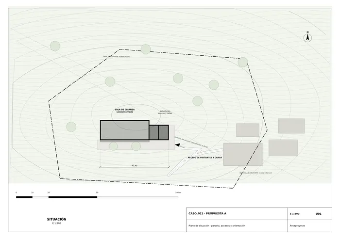
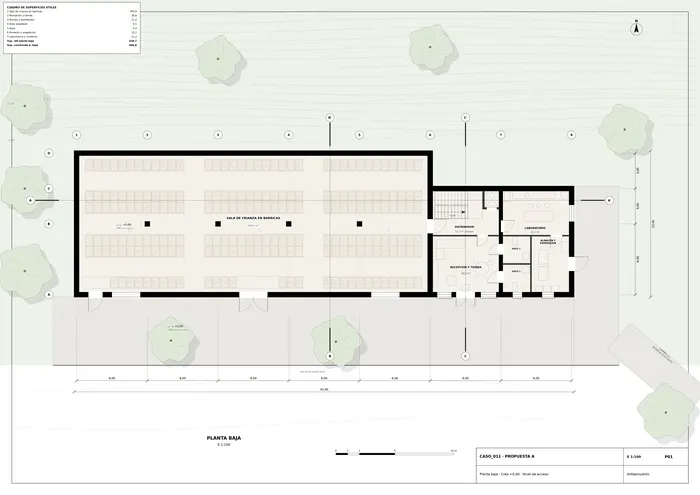
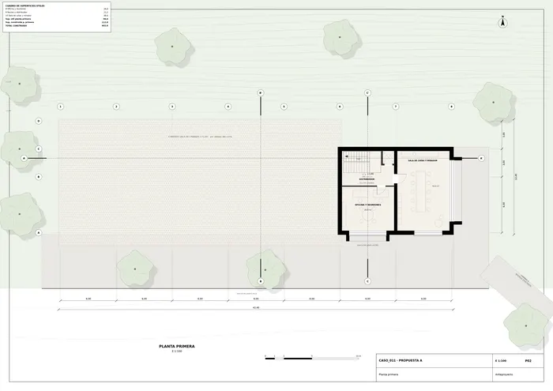
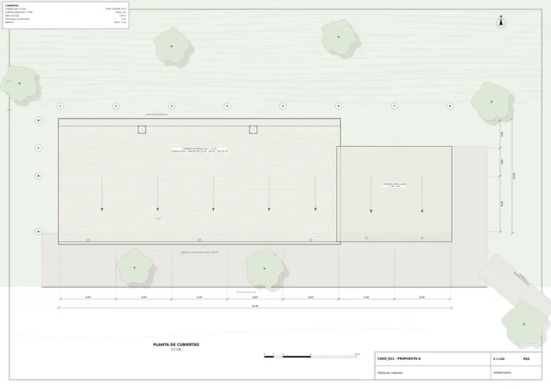
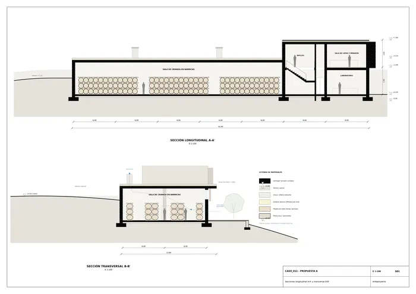
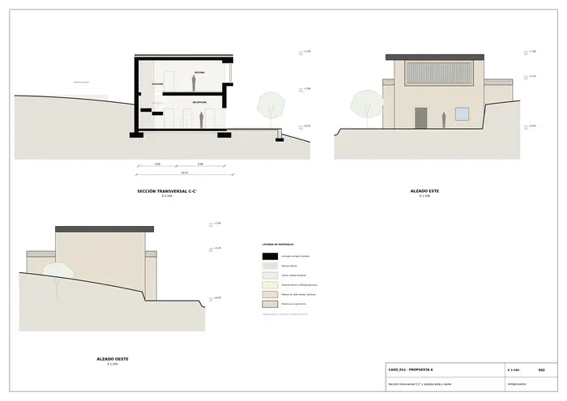
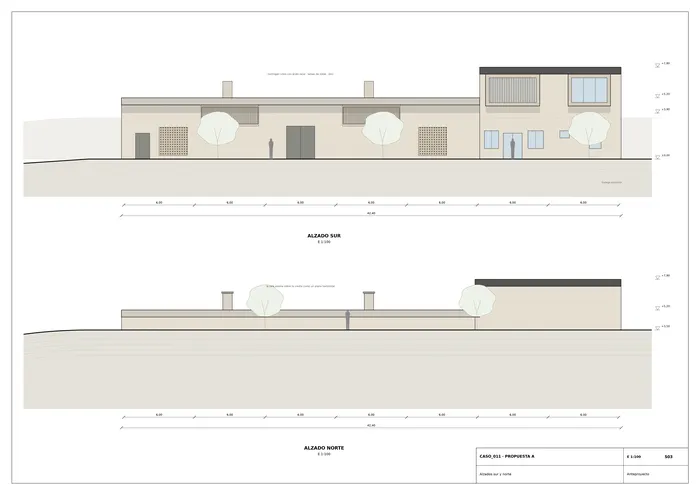
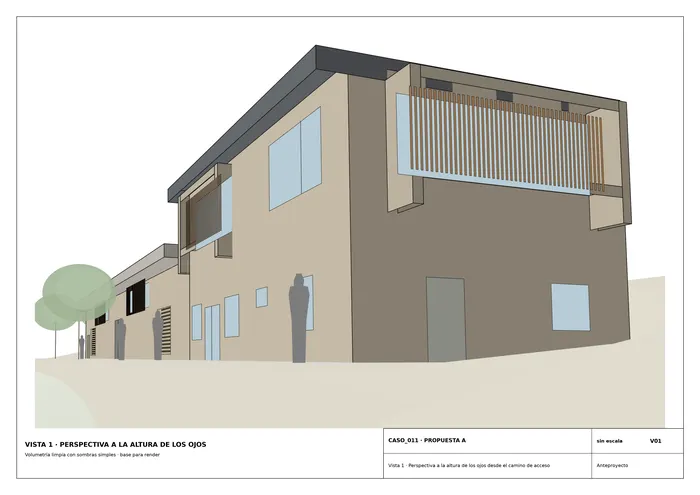
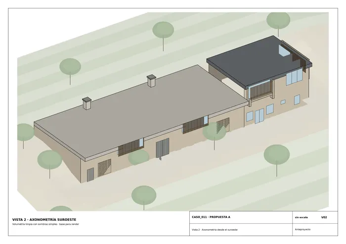
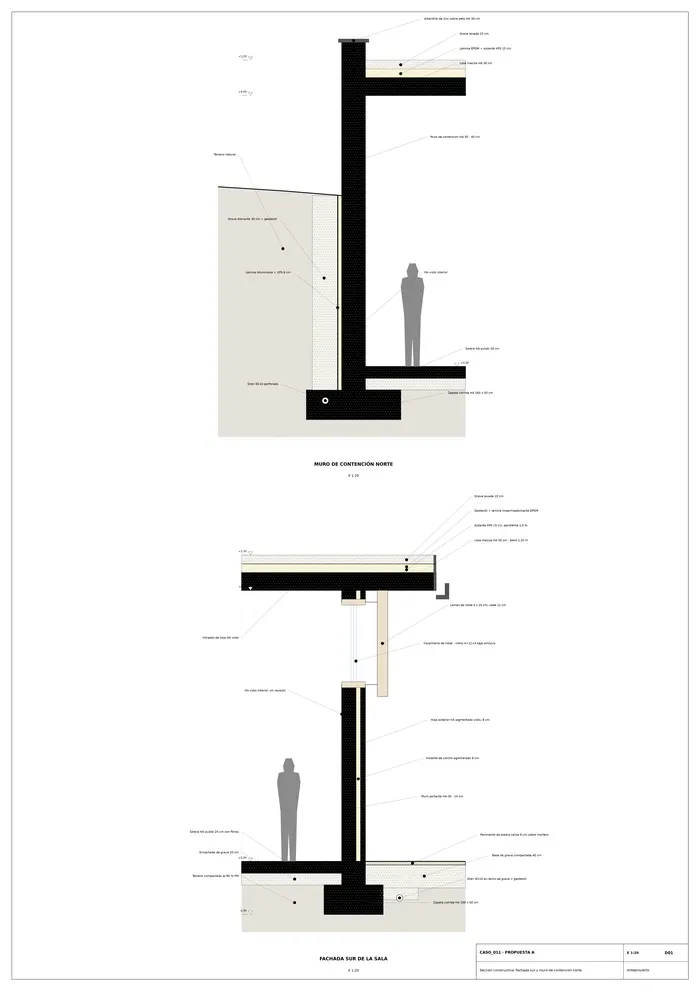

Caso 011 · Gruppo Vid'A (Gulino; Albanese) · 2021 · productivo (bodega)
Una barra horizontal y pesada, la sala de crianza, se hunde en la cresta de la colina y asoma sobre ella como un único plano de cubierta con alero. En su extremo este, hacia el camino que sube desde la bodega existente, se levantan dos pabellones-marco de HA, más altos y más abiertos, que miran al horizonte (acceso, laboratorio, catas y mirador). Todo lo que necesita estabilidad térmica (barricas) está enterrado al norte y protegido al sur por un alero de 1,20 m. Todo lo que necesita vistas y visitantes sube a los marcos.
| 1. Barra semienterrada + dos marcos (elegido) | 2. Pozo vertical compacto (diagramático: ¿debe extenderse en horizontal?) | 3. Peine de tres naves perpendiculares a las curvas | |
|---|---|---|---|
| Ocupación | 42 × 12 m a lo largo de la cresta | 18 × 18 m con dos niveles enterrados | 3 naves de 7 × 26 m + galería |
| Programa (390-650 m²) | 603 m² construidos | 650 m² solo con dos sótanos (7 m de excavación) | 560 m² |
| Clima / inercia | Muro norte enterrado, alero sur, ventilación cruzada nocturna | Mejor inercia, pero necesita ventilación mecánica | Naves expuestas al sol en el lado largo |
| Vistas / paisaje | Plano horizontal como en el boceto; marcos al horizonte | Casi invisible, sin vistas | Rompe la cresta con tres cumbres |
| Accesos / normativa | Todo a cota 0,00, sin escalones; salidas directas | Rampa de barricas y escalera de 7 m, evacuación larga | Pendientes del 10-15 % en el trasiego |
Ajuste del partido 2 (croquis 2 ajustado): se reduce a un nivel enterrado de 4,5 m y rampa del 8 %. Sigue sin cumplir: la superficie útil baja a unos 380 m² y el trasiego de barricas depende de un montacargas. Se descarta por eso, no por el dibujo. El partido 3 se descarta porque trasegar de nave en nave exige rampas y porque la cubierta pierde la continuidad que pide el boceto. Se elige el 1 porque es el único que da a la vez un único nivel de trasiego, inercia térmica sin máquinas y la imagen horizontal del boceto.
| A. Muro macizo perforado + marcos de HA (elegida) | B. Piel de lamas verticales sobre vidrio / muro cortina | |
|---|---|---|
| Hueco/macizo | 90 % macizo; huecos puntuales | 70-80 % hueco |
| Material y profundidad | HA pigmentado con árido local 40 cm, panel perforado, marcos de 0,90 m | Vidrio + lamas de roble, 15 cm |
| Contexto | Colina agrícola de piedra y tierra, sin vecinos; las bodegas existentes son macizas | Más propia de un edificio de visitantes |
La sala (barricas, 14-16 °C, poca luz) exige masa y oscuridad: el muro sur es macizo con tres paneles de celosía cerámica (tomas de aire) y dos huecos altos protegidos por lamas de roble que dejan entrar luz rasante sin sol directo. Solo en los marcos (este y sur de los pabellones) uso lamas sobre vidrio, porque ahí las vistas son abiertas y el sol de poniente y de mediodía exige filtro: no basta un hueco en un paño porque el marco profundo es el que da sombra a un vidrio de 4 × 2,1 m. Colores: ocre apagado (HA), roble, zinc gris en cubierta.
Sala de crianza en planta baja, 30 × 12 m, con 6 filas de barricas apiladas en 3 alturas (unas 620 barricas de 225 L, 140 000 L). A su este, dos pabellones de 6 × 9 m. Planta baja: recepción y tienda, núcleo con escalera y ascensor, dos aseos, laboratorio y almacén/expedición con puerta al patio. Primera: oficina y sala de catas con mirador (marco abierto al este). Recorrido del visitante: camino → patio → recepción → catas → sala de crianza (por el núcleo). Recorrido de producto: camino → almacén → laboratorio → sala (puerta de 2,40 m en el muro sur).
| Exigido | Propuesto | Cumple / desviación |
|---|---|---|
| Plantas | P01 (planta baja), P02 (planta primera), P03 (planta cubiertas) | Cumple |
| Secciones | S01 (seccion longitudinal) (A-A' y B-B'), S02 (seccion transversal) (C-C') | Cumple |
| Alzados | S03 (alzado sur norte), alzados este y oeste en S02 | Cumple |
| Detalle constructivo | D01 (seccion constructiva) (1:20) | Cumple |
| Situación | U01 (situacion) | Cumple |
| Sala de crianza en barricas (nº y m² a definir) | 1 sala, 343,4 m² útiles, ~620 barricas | Cumple |
| Espacios complementarios: acceso y recepción | Recepción y tienda 1 ud., 26,8 m² | Cumple |
| Servicios | Aseo adaptado 5,5 m² (1 ud.), aseo 5,4 m² (1 ud.) | Cumple |
| Visitantes (catas) | Sala de catas y mirador 48,6 m² (1 ud.) | Cumple |
| Otros usos propuestos | Laboratorio 21,2 m², almacén y expedición 15,2 m², oficina 26,8 m², 2 núcleos 21,2 m² cada uno | Cumple |
| Superficie construida 390-650 m² | 602,6 m² (útil 535,3 m²) | Cumple |
| Parcela, topografía, accesos | Cresta con pendiente a ambos lados, cota 0,00 en plataforma y un camino al este (≤ 8 %) | Cumple; parcela y linderos supuestos |
| Normativa: altura y retranqueo | 7,80 m a cubierta, a más de 15 m de los linderos supuestos | Cumple; genérica |
| Entorno: integración en paisaje agrícola | Plano horizontal bajo la cresta, tierra, olivos y viñedo | Cumple |
| Clima Csa | Inercia, alero, ventilación nocturna, cubierta invertida | Cumple |
| Edificación existente | Bodega existente a cota inferior, no se toca; solo conexión por camino | Sin demolición |
Retícula de 6 × 6 m (ejes 1-8 / A-D). Sala: losa maciza de HA de 30 cm (luz 6 m, L/20), pilares de 40 × 40 en el eje B (cada 6 m), muros de HA de 40 cm en el perímetro (contención al norte y oeste). Compresión en pilar: unos 650 kN mayorados sobre 0,16 m², unos 4 MPa, correcta con HA-30. Pabellones: muros portantes de HA de 40/30 cm y losas de 30 cm entre ejes de 6 m; marcos con voladizo de 0,90 m y canto de 0,60 m. Cimentación: zapata corrida de 100 × 50 cm bajo muros, zapata aislada de 1,6 × 1,6 × 0,6 m bajo pilares, solera de 20 cm sobre encachado de 20 cm. Terreno con σadm supuesta de 0,2 MPa, a confirmar con estudio geotécnico.
Muro sur: hoja exterior de HA pigmentado visto de 8 cm, corcho aglomerado de 8 cm y hoja portante de 24 cm. Cubierta invertida: losa de 30 cm, XPS de 15 cm, EPDM y grava de 15 cm con pendiente del 1,5 % hacia el canalón visto. Carpintería de roble con vidrio 4+12+4. Pavimento de piedra caliza en el patio. Muro norte: contención de 40 cm con lámina, XPS de 6 cm, grava drenante y dren Ø110.
Semienterrada al norte (temperatura estable de 14-16 °C y humedad del 70-80 %). Alero de 1,20 m al sur y lamas filtran el sol alto de verano. Ventilación cruzada nocturna: toma baja por los paneles perforados del sur y extracción por dos chimeneas en la cubierta (flechas azules en las secciones), con refuerzo mecánico y nebulización solo cuando haga falta. Cubierta de grava, pavimento claro y árboles en el patio.

U01 · Plano de situación · parcela, accesos y orientación
P01 · Planta baja · Cota +0,00 · Nivel de acceso
P02 · Planta primera
P03 · Planta de cubiertas
S01 · Secciones longitudinal A-A' y transversal B-B'
S02 · Sección transversal C-C' y alzados este y oeste
S03 · Alzados sur y norte
V01 · Vista 1 · Perspectiva a la altura de los ojos desde el camino de acceso
V02 · Vista 2 · Axonometría desde el suroeste
D01 · Sección constructiva: fachada sur y muro de contención norteMemoria de la propuesta tal como la entregó el sistema. Se han omitido las notas internas del proceso (revisiones, control de reconocimiento y referencias a archivos de trabajo).